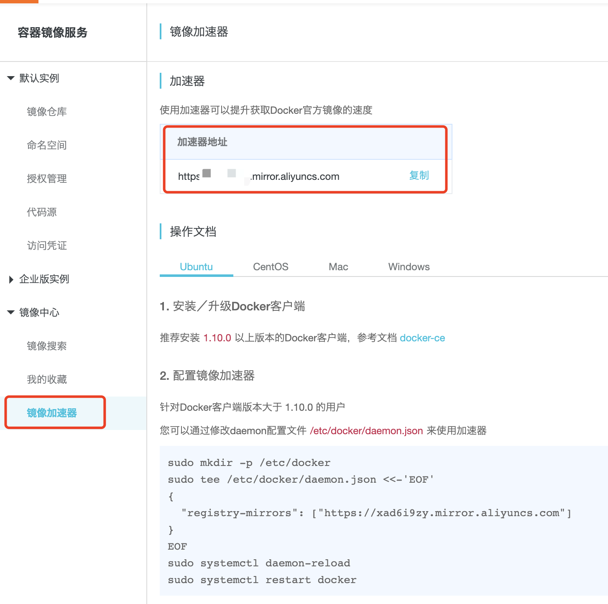

默认Docker会从dockerhub拉取镜像，介于国际网络等问题会出现速度慢、超时等问题，我们先申请一个镜像加速地址
公共加速地址：
通过阿里云生成自己专属的加速地址 登录：https://cr.console.aliyun.com/

sudo yum remove docker \
docker-client \
docker-client-latest \
docker-common \
docker-latest \
docker-latest-logrotate \
docker-logrotate \
docker-engine
sudo yum install -y yum-utils
sudo yum-config-manager \
--add-repo \
https://mirrors.aliyun.com/docker-ce/linux/centos/docker-ce.repo
sudo yum install docker-ce docker-ce-cli containerd.io
选择版本
yum list docker-ce --showduplicates | sort -r
根据上述版本，替换VERSION_STRING
sudo yum install docker-ce-<VERSION_STRING> docker-ce-cli-<VERSION_STRING> containerd.io
sudo systemctl start docker
sudo systemctl enable docker
根据我们手上的加速地址，执行以下命令，添加国内镜像加速。
sudo mkdir -p /etc/docker
sudo tee /etc/docker/daemon.json <<-'EOF'
{
"registry-mirrors": ["https://xad6i9zy.mirror.aliyuncs.com"]
}
EOF
sudo systemctl daemon-reload
sudo systemctl restart docker
docker version